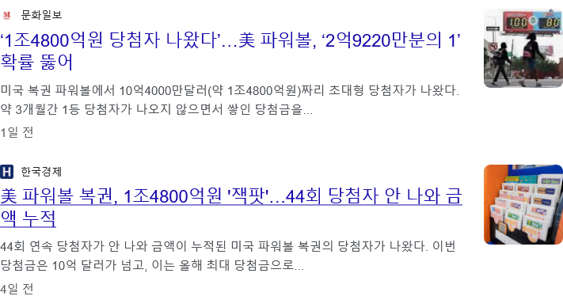
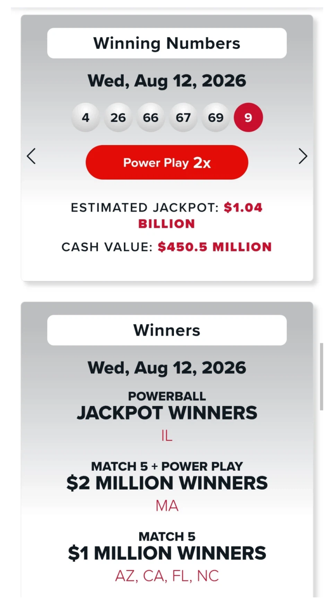

https://bbs.ruliweb.com/best/board/300143/read/76354069


1등 당첨자는 미국 일리노이주
당첨금은 10억4천만 달러(1조4800억원)
세금떼고 실수령액은 7,400억
대신 연방세 37%, 일리노이주세 4.95%
더 내야해서
진짜 가져가는 당첨금은 4,200억원
당첨금이 터진 가게는 약 50만 달러(7억) 보너스를 받게 됨
ㄷㄷㄷㄷㄷ;;;;
https://bbs.ruliweb.com/best/board/300143/read/76354069


1등 당첨자는 미국 일리노이주
당첨금은 10억4천만 달러(1조4800억원)
세금떼고 실수령액은 7,400억
대신 연방세 37%, 일리노이주세 4.95%
더 내야해서
진짜 가져가는 당첨금은 4,200억원
당첨금이 터진 가게는 약 50만 달러(7억) 보너스를 받게 됨
ㄷㄷㄷㄷㄷ;;;;
댓글
수집 당시 댓글 31개
차가운밤 · 3 일 전
부럽다
colim · 3 일 전
세금이 1조ㅋㅋㅋㅋㅋㅋㅋㅋㅋ
털달린바퀴벌레 · 3 일 전
이게 복권이지 로또 1등돼도 시발 강남집한채를 못 삼 ㅋㅋ
소식주의 · 3 일 전
로또를 예전처럼 2천원으로 올리자
구멍 · 3 일 전
이야 저기는 가게도 보너스를 받는구나 ㅋㅋㅋ
년후탈퇴할거 · 3 일 전
로또 세금많다고 하더니 저긴 더하네
스크래치헬멧 · 3 일 전
거의 1/3수준으로 떨어지네
냐냐냥냥냐냥 · 3 일 전
복권은 당첨금 터진곳에 뽀찌주는게 제일 이해 안됨
민트초코치노 · 3 일 전
어차피 우리나란 안떼
야스 · 3 일 전
그냥 판매 수수료를 더 많이 주는 대신 당첨금 나오면 뽀찌 떼주는 건데, 로또 운영사 입장에선 지불이연 장점도 있고 어차피 저 7억을 판매 수수료로 복권 가맹점에 판매분 비율 만큼 나눠 줘도 얼마 안함;;;;
아옳옳옳 · 3 일 전
바로 경호원 고용해야겠다
MG · 3 일 전
1조를 떼가네 ㅋㅋ
경자 · 3 일 전
세금이 1조가 넘노
이상하다 · 3 일 전
언제 미국은 복권에 세금 안 뗀다더니 한국보다 더 떼는데?
매콤한펩시 · 3 일 전
한국이랑 비슷하긴 함 미국은 판매액은 안건드리고 당첨금에서 떼는거고 한국은 전체 판매액에서 절반떼고 남은 절반으로 1,2,3,4,5등 나눠주는데 1등은 고정당첨금인 4,5등 당첨금 나눠주고 남은거에서 75퍼센트인데 거기서 당첨금에서 33퍼떼고 하는거 1000억 팔리고 500억 먼저 걷어가고 남은 500억에서 4,5등 당첨금 다해서 200억쯤 하면 남은 300억으로 1등 75퍼 2등 3등 12.5퍼센트씩 나눠먹는건데 1등 당첨금액이 225억이라고 하면 10명이서 나눴을때 22.5억 여기서 7.4억을 떼고 15억 먼저 500억 떼가는거 없이 계산해보면 1000억이었으면 4,5등을 빼면 800억 1등이 600억에 10명이면 60억이니까 15억이 남으려면 75퍼센트를 세금으로 내는거 같은 조건으로 보면 미국은 세금이 72퍼센트 한국은 75퍼센트라고 보는게 맞을거임
년째다 · 3 일 전
미국도 판매액의 50%만 상금으로 써 우리나라랑 똑같음
매콤한펩시 · 3 일 전
내가 잘못알고 있었네
년째다 · 3 일 전
개드립에도 몇 번 올라왔었음 아마 우리나라가 파워볼 따라한걸수도 있고 뭐 자세한건 모르겠는데 여튼 그럼 1년지나면 당첨금 냠냠하는거도 같더라 ㅋㅋㅋㅋ
랩개드립NPC · 3 일 전
2억 9천만분의 1이라고 해봐야 미국 인구 감안하면 별거 아닌거 아님?
도박꾼 · 3 일 전
드디어라면 언제부터 안나오던거임?
비추누르면대머리됨 · 3 일 전
갑자기 세수가 1조가 늘어나버리네? ㅋㅋ 도대체 누가 당첨된거여 ㅋ
ediredo · 3 일 전
일리노이주 시카고 제시카네
이메일주소오타 · 3 일 전
세금이 ㅋㅋ 당첨금보다 더 많이가져가네
땀똔 · 3 일 전
세금 1조 할거면 그냥 당첨금을 줄여라 국가가 당첨된거 아니냐 저정도면?
고르곤존나 · 3 일 전
우리나라 로또가 금액이 적당한 것 같음 회차마다 편차가 있겠지만 아파트나 건물 작은거 하나 살 수 있는 정도고 대신 당첨자가 많아지는 구조니까 나는 로또 안 삼 천원짜리 사면 400원 날리는거니까
딜도잘넣는사람 · 3 일 전
세금 때도 4200억이라 인생 역전은 맞네
야니네코 · 3 일 전
와 세금 1조ㅋㅋ
냉동블루베리 · 3 일 전
당첨금이 1조5천인데 정작 손에 쥐는 건 4천 조금 넘는 거냐 ㅋㅋㅋㅋ
네펜데스 · 3 일 전
우리회사 시총보다 많네 시발 ㅋㅋ
논리왕전기 · 3 일 전
세금이 1조는 ㅅㅂㅋㅋㅋㅋㅋㅋ
사랑을해요 · 2 일 전
세금이 중요한게 아니지 어차피 파워볼 1등 당첨금액은 세고 1등만 당첨되면 평생 걱정이 없는게 개꿀이지...